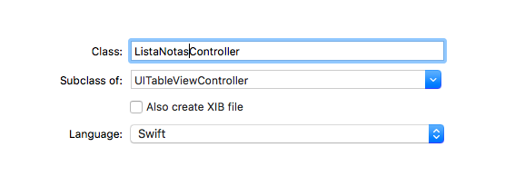

Recuperar los datos
Recuperar datos (2 puntos)¶
Vamos a añadir una pantalla donde se puedan consultar las notas que tenemos almacenadas. Las listaremos en una table view y por el momento se verán todas, no se podrán filtrar (añadiremos esa posibilidad cuando veamos la sintaxis de las "consultas" o fetch requests).
La interfaz de usuario
Sigue estos pasos:
- Crear el Tab Bar Controller: teniendo seleccionada la única pantalla de la aplicación, ve al menú y selecciona
Editor > Embed In > Tab Bar Controller. Se creará el tab bar controller, por el momento con una única "solapa" que será la pantalla de creación de notas - En la pantalla de creación de notas, pulsa sobre el item de la barra inferior para editarlo, y ponle como
Titlepor ejemploNueva, para que se vea que es la pantalla de creación de notas - Crear la pantalla para listar notas: Arrastrar al storyboard un
Table view controller. Recuerda que es una especie de tabla a “pantalla completa”. - Vincular la nueva pantalla al tab bar controller: hacer
Ctrl+Arrastrardesde la pantalla del tab bar hasta la de listado de notas. En el menú contextual elegir como tipo del segue el de,View Controllers(bajoRelationship Segue).- Cambia el título del item de la barra inferior para que ponga "Lista" o algo similar.
- Vamos a configurar la interfaz de la nueva pantalla
- Cambia el aspecto del prototipo de la tabla: pulsa sobre la celda prototipo de la tabla, y en las propiedades cambia el
Stylea `Basic - Pon un reuse identifier: pon algún
Identifierpor ejemploMiCelda(recuerda que este identificador se emplea luego en el código para solicitar al sistema instancias reutilizables de celdas)
- Cambia el aspecto del prototipo de la tabla: pulsa sobre la celda prototipo de la tabla, y en las propiedades cambia el
- Ahora vamos a configurar el controlador de la pantalla
- Primero tenemos que crear un controlador (
File>New>File...). De las plantillas que aparecen usaCocoa Touch Class, así Xcode generará código por nosotros. La clase se debe llamarListaNotasControllery heredará deUITableViewController.
- Primero tenemos que crear un controlador (

- Ahora hacer que la nueva clase sea el controlador de la pantalla de listado de notas: tienes que seleccionar la pantalla de listado de notas (primero de los iconos de la barra superior, el de fondo amarillo) y en el Identity Inspector (tercero de los iconos del área de la derecha), como "Custom Class" poner
ListaNotasController
Puedes probar a ejecutar el proyecto para ver que funciona el cambio de pantallas. Evidentemente la lista de notas aparecerá vacía. Al menos, poniendo un print con algún mensaje en el viewDidLoad del ListaNotasController puedes comprobar que efectivamente se usa esta clase como controlador de la nueva pantalla. Cuando la muestras por primera vez debería aparecer el mensaje.
El código de la pantalla de listado
En la tabla vamos a dibujar un array de notas. Lo primero será definir una propiedad para almacenarlas en la clase ListaNotasController
1 2 3 4 5 6 7 | //RECUERDA que hace falta este import import CoreData class ListaNotasController: UITableViewController { var listaNotas : [Nota]! } |
Solo nos queda rellenar el array de notas. En ListaNotasController crea un método
1 2 3 | override func viewWillAppear(_ animated: Bool) { } |
Vamos a rellenarlo de código. Para recuperar datos de Core Data se usa un fetch request, que sería algo así como una consulta. para crearlo, inicializamos una instancia pasándole el nombre de la entidad resultado de la consulta. Para ejecutarlo, llamamos al método fetch del contexto. Veamos un ejemplo (todavía no tienes que introducirlo en el proyecto, luego veremos cómo). Escribe el siguiente código en el viewWillAppear (Recuerda que debes sacar de algún lado el contexto de Core Data (miContexto), como se hizo por ejemplo en la sección 3.3.):
1 2 3 4 5 6 7 8 | let request : NSFetchRequest<Nota> = NSFetchRequest(entityName:"Nota") //"miContexto" es el contexto de Core Data //FALTA el código que obtiene "miContexto", como se ha hecho en ejemplos anteriores if let notas = try? miContexto.fetch(request) as! [Nota] { for nota in notas { print(nota.texto) } } |
Nótese que los fetch request usan tipos. Es decir, devuelven un conjunto de elementos de una clase determinada.
Si pruebas el proyecto, al navegar a la pantalla de lista, los textos de las notas deberían aparecer en la consola de Xcode (aunque no en la pantalla del simulador).
Para que los datos de las notas aparezcan en la pantalla, debes:
- Asignar el valor devuelto por
miContexto.fetcha la propiedadself.listaNotas, que has creado antes - Forzar el refresco de la tabla para que aparezcan los datos. Tras asignar el valor a listaNotas, haz
self.tableView.reloadData() - Modificar los métodos que ha creado Xcode:
numberOfSectionsdebe devolver 1 en vez de 0, ya que la tabla tiene 1 seccióntableView(_ tableView: UITableView, numberOfRowsInSection section: Int)debe devolver el tamaño del arraylistaNotas(propiedadcount)- El siguiente método, que está comentado, debes descomentarlo, y hacer un par de modificaciones:
- Donde hace el
dequeReusableCell..., cambia el identificador de la celda por el que hayas elegido tú antes al crear esta pantalla (aquí se sugeríaMiCelda) - Donde pone el comentario
Configure the cell...hacer que como texto de la celda aparezca el texto de la nota correspondiente
1 | cell.textLabel?.text = self.listaNotas[indexPath.row].texto as? String |